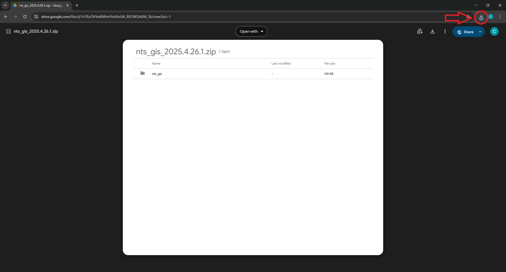
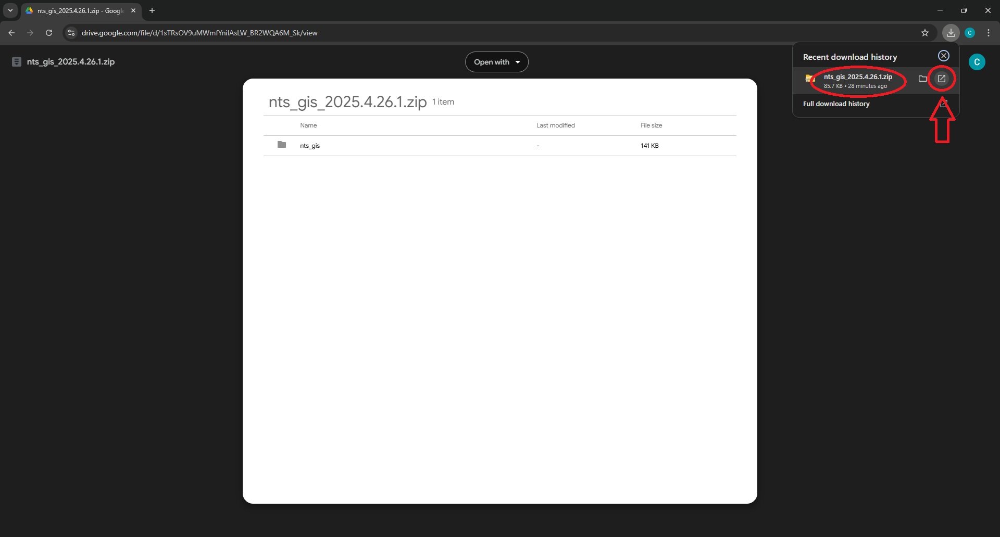
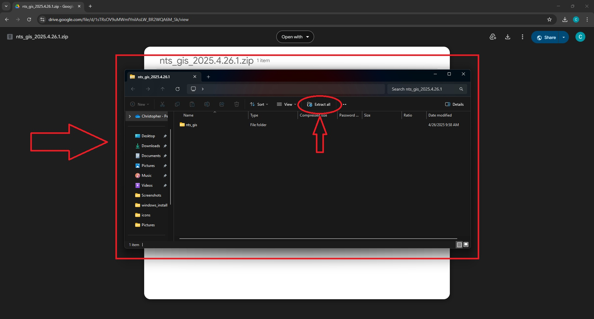
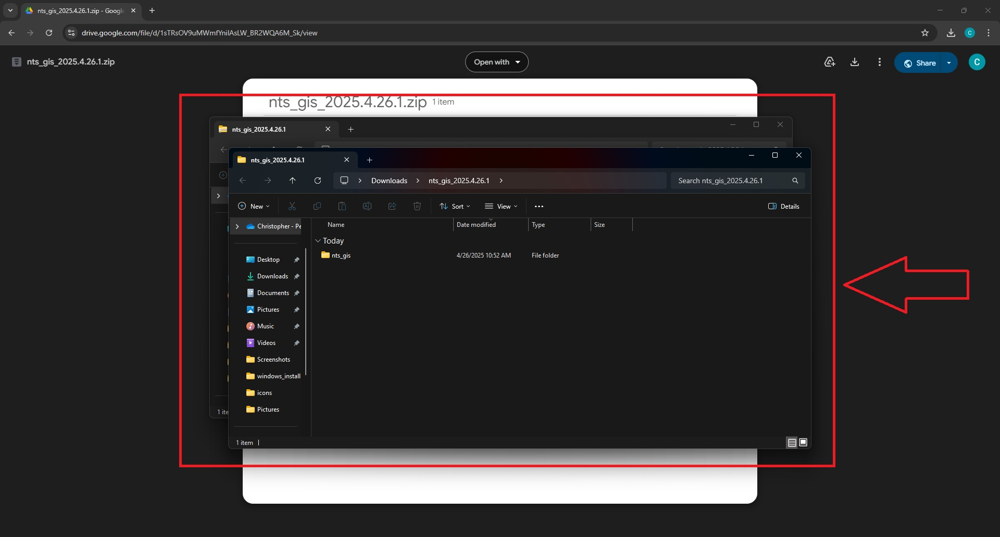

Downloading
Click on the link below to open up the Google Drive folder with the extension. Follow the steps to download and extract the extension.
NTS: GoTo Integration Suite.
Step 1: Click the download button in the top right corner of the page.

Step 2: Once the download is finished. Click on downloads folder button.

Step 3: In the Recent downloads history popup, click the open button.

Step 4: The file explorer will open up. Now click the extract all button.

Step 5: This will open up another window. Do not change the destination folder. Click the extract button.

Step 6: After the extraction is finished, another file explorer window will open up. You can close these windows now.
.